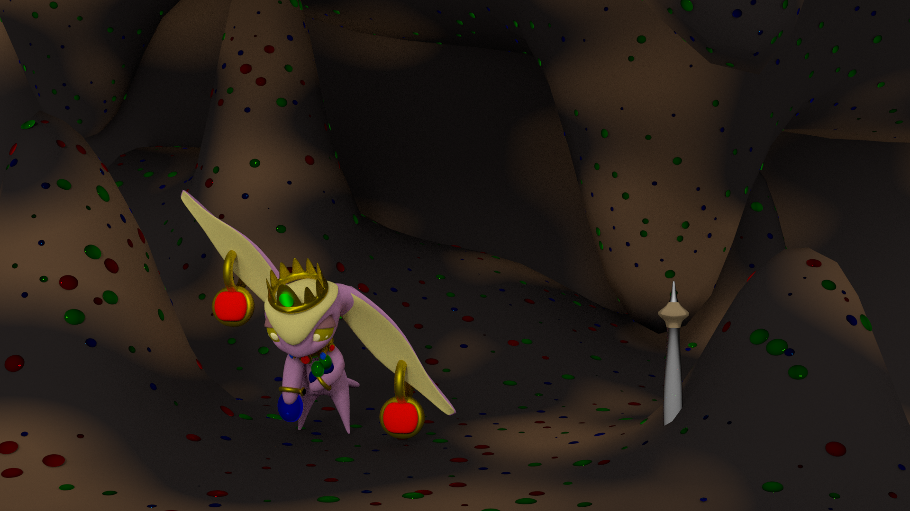

Temples of Impla
Their diets consist of precious gems, gold and silver from their caves, however, the land that they own are running low! They wish to own more of the island, to take the resources underground but is this the only solution?
A Greed Imp scavenging underground for gems to eat.
Greedy imps are very straightforward, they eat metals, gems, and precious stones and are seen wearing these items on their bodies. Other imps think they are showing off, but this is not the case, they wear their wealth because they need to keep consuming mineral deposits to survive. They are viewed as being greedy, due to their possession of food items and other resources that they don’t need and therefore trade away for high prices. They don’t need to eat all the fruit they found, but they know another imp that does and that is their motivation to find as many resources as possible, to trade away for their food of choice, gold, metal, and gems.
Greed imps cannot eat fruit, but will grow them on their land and sell them away for their real food of choice, coins and gems.


A house usually found in the Greed village, it is made of metals and gems, and eaten when the village faces a shortage of food.